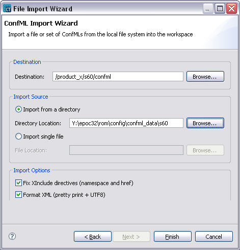
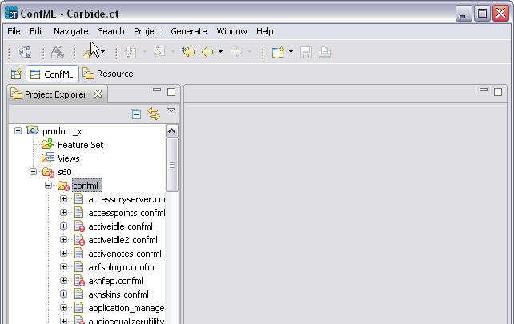

Importing ConfML files into a layer
To import Configuration Markup Language files into a layer:
- Right-click the folder where you want to import the files (usually confml folder in the layer).
- Select Import.
- In the wizard, select Import set of ConfML files and press Next.
- Specify where the files to be imported are located, as shown in the following example.

Figure 4 Importing set of confml files
- Click Finish. The ConfML files are listed under the layer, as shown in the example below.

Figure 5 After import
Same way it’s possible to import implementation files. Other types of resources (e.g. images, ring tones …) can just be dragged and dropped onto appropriate folder.